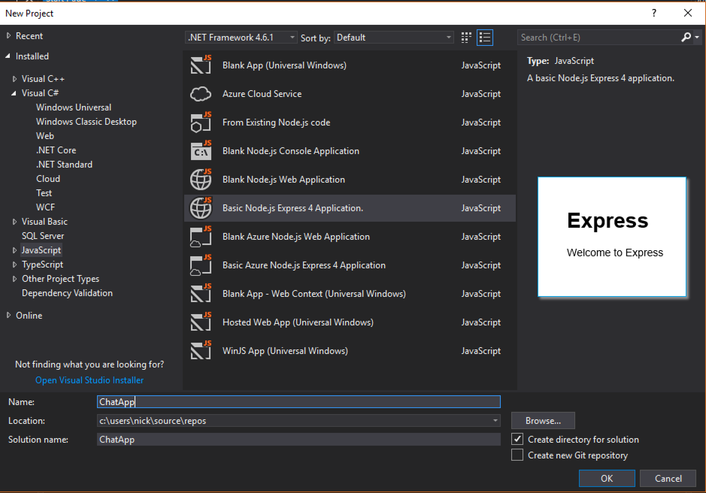

Как вести разработку проекта на NodeJS + PUG (Jade)
Краткая предыстория и создание
Мы ведём разработку веб-сервиса с использованием технологий NodeJS и PUG JS. Многие скорее всего знают, насколько это удобные инструменты в связке. Однако при командной разработке появились некоторые нюансы, которыми мы с удовольствием готовы поделиться.
Для начала создадим проект и подключим в него необходимые пакеты. Прямо как показано на скриншотах:
Нам понадобится два пакета:
"pug": "^2.0.0-rc.4",
"pug-cli": "^1.0.0-alpha6",
После того, как мы их добавили, нужно установить недостающие пакеты. Для этого правой кнопкой мыши кликните по npm -> "Install Missing npm Packages"
Создание шаблона PUG
Создадим шаблон PUG, который будет расширять index.pug и назовем его "dialog.pug"
extends layout
block append content
div Dialog with #{targetuserName}
А так изменится наш "index.js" в папке "routes"
router.get('/dialog', function (req, res) {
//заполним тестовые данные
var data = {
userid: 1,
targetuserid: 2,
targetuserName: 'Max',
history: [
{
author: 1,
msg_txt: 'Hey, Dude!',
id: 1
},
{
author: 1,
msg_txt: 'This is wonderful!',
id: 2
},
{
author: 2,
msg_txt: 'Good morning!',
id: 3
},
{
author: 2,
msg_txt: 'Sure!',
id: 4
}
]
}
//в результате функции render сервер
//сформирует html документ и отправит его в браузер
res.render('dialog', data);
});